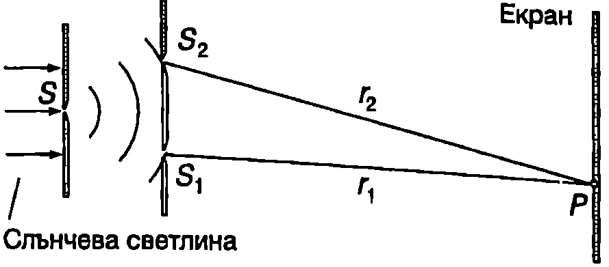
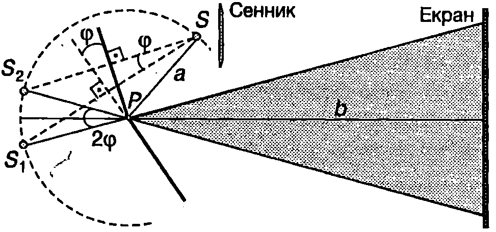
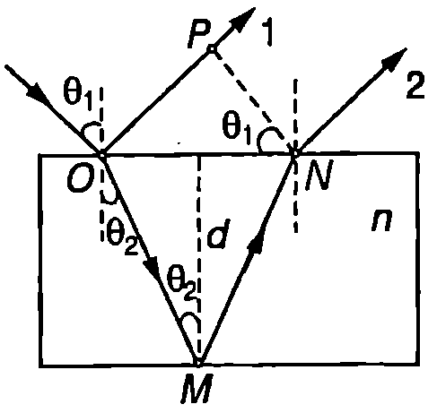
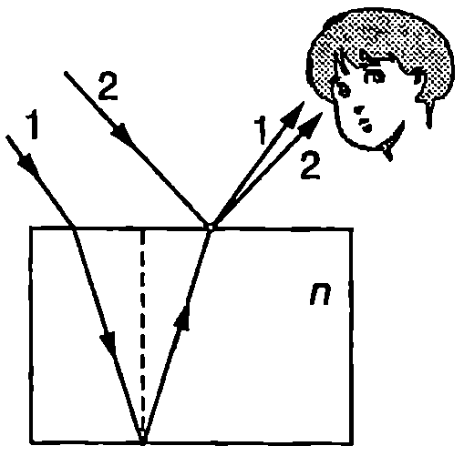
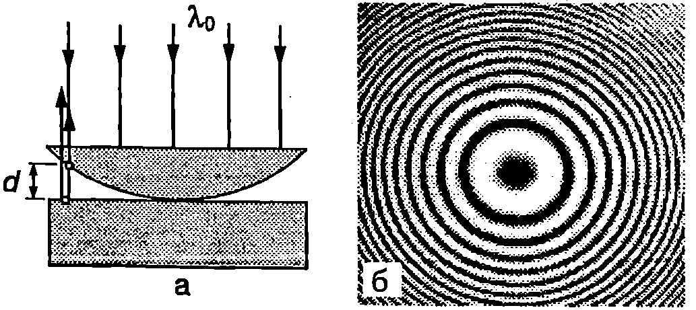
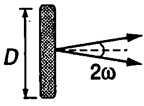
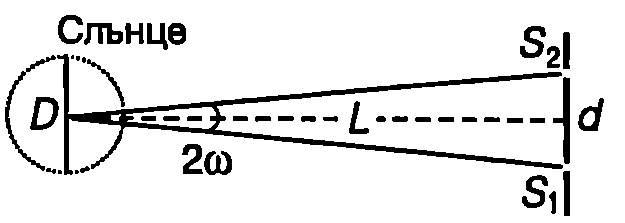

Два реални източника на светлина обикновено са некохерентни. За да се наблюдава интерференция, на практика се налага използването само на един източник. Излъчената от него светлина се разделя на два кохерентни снопа, които изминават различни пътища и отново се събират, при което интерферират помежду си. Ще разгледаме някои от класическите опити за наблюдаване на интерференция на светлината.
Опит на Юнг
През 1801 г. английският физик Томас Юнг (1773-1829) създава експериментална постановка за наблюдаване на интерференция на светлината и пръв успява да определи дължината на светлинните вълни за различните цветове. В опита на Юнг ярък сноп слънчева светлина осветява непрозрачен екран с малък отвор $S$ (Фиг. \ref{fig:91.1}). Съгласно с известния от училищния курс по физика принцип на Хюйгенс (на принципа на Хюйгенс ще се спрем отново в следващия параграф), отворът $S$ може с приближение да се разглежда като нов точков източник на светлина. Сферичната вълна от точковия източник S попада върху втори екран с два малки отвора и $S_1$ и $S_2$, разположени симетрично спрямо $S$ и много близо един до друг. Отворите $S_1$ и $S_2$ лежат на една и съща вълнова повърхност на падащата вълна и съгласно с принципа на Хюйгенс играят ролята на вторични, излъчващи синфазно източници на сферични вълни с еднаква честота, които са кохерентни. Двете вълни интерферират и върху отдалечен екран $E$ се наблюдават редуващи се светли и тъмни ивици. Поради големите си ъглови размери Слънцето не може да се разглежда като точков източник. Излъчените от различни те му части светлинни вълни не са кохерентни. Затова, ако го няма първият екран, вторичните източници $S_1$ и $S_2$ също ще бъдат некохерентни и интерференция няма да се наблюдава. За да се увеличи яркостта на интерференчната картина, в

Опит на Юнг.
`Фиг. 91.1`
опита на Юнг вместо малки кръгли отвори се използват тесни, успоредни един на друг процепи $S$, $S_1$ и $S_2$ които са перпендикулярни на равнината на чертежа от Фиг. \ref{fig:91.1}. Тази замяна не води до изменения в разпределението на интензитета на светлината в централната част на екрана, където всички разглеждания, направени в~\ref{sec:90} за интерференция от два точкови източника, остават в сила.
Огледала на Френел

Огледала на Френел.
`Фиг. 91.2`
През 1816 г. френският физик Огюст Френел (1788-1827) наблюдава интерференция на светлината с помощта на две огледала, чиито равнини сключват помежду си малък ъгъл $\varphi$ (Фиг. \ref{fig:91.2}). За източник се използва тесен, ярко осветен процеп $S$, който е успореден на пресечницата на огледалата. В областта, където се припокриват отразените от двете огледала светлинни снопове, възниква интерференция (сивата област на Фиг. \ref{fig:91.2}). Екранът, върху който се наблюдава интерференчната картина, е защитен със сенник от пряко попадане на светлинни лъчи от източника.
Пример 91.1
В опита с огледалата на Френел определете широчината $\Delta x$ на интерференчните ивици върху екрана. Дадени са (вж. Фиг. \ref{fig:91.2}) ъгълът между огледалата $\varphi = 10’$, разстоянието от процепа до огледалата $a = 0,!15$ m и разстоянието от огледалата до екрана $b = 1,!5$ m. Дължината на вълната е $x = 589$ nm. \end{psexample}
Решение
Построяваме образите $S_1$ и $S_2$ на източника $S$ от двете плоски огледала (Фиг. \ref{fig:91.2}). Вместо да разглеждаме хода на лъчите, отразени от двете огледала, можем да заменим огледалата с два кохерентни източника, чието положение съвпада с образите $S_1$ и $S_2$ на реалния източник $S$. Такъв подход се нарича метод на оптичните образи. Разликата в ходовете на два лъча, които излизат от образите $S_1$ и $S_2$ и интерферират върху екрана, е същата, както за съответните действителни лъчи, отразени от двете огледала. Така задачата се свежда до намиране на положението на образите: разстоянието между тях и от тях до екрана. Всички разсъждения след това са същите, както при вече разгледаната задача в~\ref{sec:90} за интерференция от два точкови източника.
Да намерим положението на образите. От Фиг. \ref{fig:90.2} се вижда, че $S_1 P = S_2 P = a$, т.е. точките $S$, $S_1$ и $S_2$ лежат на една окръжност с радиус $a$ и център в точка $P$. Ъгълът $\varphi$ между двете огледала е равен на ъгъл $\angle S_1 S S_2$, (ъгли с взаимноперпендикулярни рамена). Централният ъгъл $\angle S_1 P S_2$, и вписаният ъгъл $\angle S_1 S S_2$ отсичат от окръжността една и съща дъга $S_1 S_2$, поради което $\angle S_1 P S_2 = 2\angle S_1 S S_2 = 2\varphi$. За малки ъгли хордата $S_1S_2$ е приблизително равна на дъгата $S_1S_2$. Разстоянието между двата образа е $$d = S_1 S_2 = 2a\varphi.$$
Тъй като $d$ е много по-малко от $a$ и $b$, разстоянието от образите до центъра на екрана е приблизително равно на $L \approx a+b$. По-нататък използваме резултата от пример 90.1 на стр. 204 и определяме широчината на интерференчните ивици: $$\Delta x = \frac{L}{d} \lambda = \frac{a+b}{2a\varphi}=1,!1~\mathrm{mm}.$$
(При числените пресмятания ъгълът $\varphi$ трябва да се превърне от минути в радиани: $\varphi = 10’= 2,!9.10^{-3}$ rad).
Интерференция от тънки слоеве
Плоска монохроматична вълна с дължина във вакуум (въздух) $\lambda_0$ пада под ъгъл $\theta_1$ върху плоскопаралелна стъклена пластинка с дебелина $d$. На Фиг. \ref{fig:91.3} е показан ходът на един от лъчите. На двете граници стъкло-въздух се извършва отражение и пречупване на светлината. Ще се ограничим с разглеждането само на два лъча: отразения от точка $O$ лъч 1 и лъч 2, който се отразява от точка $M$ на долната повърхност на пластината и след това се пречупва в точка $N$ (Фиг. \ref{fig:91.3}). Отразените от двете повърхности на пластината вълни, които се представят чрез тези два лъча, имат приблизително еднакъв интензитет, който е около 4% от интензитета на падащата вълна (вж.~\ref{sec:87}). Няма да отчитаме вълните, получени в резултат на многократно отражение вътре в пластинката, тъй като те имат много по-малък интензитет. Както се вижда от Фиг. \ref{fig:90.3}, успоредните лъчи 1 и 2 изминават различни оптични пътища. Те се пресичат в безкрайност или във фокалната равнина на събирателна леща, където се наблюдават интерференчни ивици. Положението на интерференчните максимуми (минимуми) се определя от разликата в оптичните пътища на двата лъча, която зависи от ъгъла на падане $\theta_1$, дебелината $d$ на пластинката и от показателя на пречупване $n$ на стъклото. Получените по този начин ивици се наричат интерференчни ивици на еднакъв наклон, защото върху пластинката падат успоредни лъчи, които сключват еднакъв ъгъл $\theta_1$ с нейната нормала. Казва се, че интерференчните ивици на еднакъв наклон са локализирани в безкрайност, защото формално погледнато там се пресичат успоредните лъчи и интерферират помежду си. Такива ивици могат да се наблюдават и с невъоръжено око, което играе ролята на леща, събираща успоредните лъчи върху ретината, където се получава интерференчната картина.

`Фиг. 91.3`

`Фиг. 91.4`
Друг случай на интерференция от тънка пластинка е показан на Фиг. \ref{fig:91.4}. Интерференчната картина е локализирана върху самата повърхност на пластинката или в близост до нея. За да се наблюдава интерференция, пластинката трябва да е достатъчно тънка (от порядъка на микрони). Не е необходимо нейните повърхности да са идеално успоредни, дори те може да не са плоски. В бяла светлина интерференчните ивици са оцветени. Такива ивици лесно се наблюдават върху сапунени мехури, тънки слоеве масло или бензин върху мокрия асфалт и др. На местата, където дебелината на слоя е такава, че се изпълнява условието за интерференчен максимум за дадена дължина на вълната от видимата област, слоят е оцветен в съответстващия на нея цвят. Затова наблюдаваните ивици се наричат ивици на еднаква дебелина.
Пример 91.2
От плоскопаралелна пластинка с дебелина $d$ и показател на пречупване $n$ в отразена светлина се наблюдават интерференчни ивици на равен наклон (Фиг. \ref{fig:91.3}). Изразете условието за интерференчен максимум (минимум) чрез ъгъла на пречупване $\theta_2$. Дължината на светлинната вълна във въздуха е $\lambda_0$. \end{psexample}
Решение
При отражение от оптически по-плътна среда, в случая от границата въздух стъкло, вълната променя фазата си с $\pm\pi$, което е равносилно на геометричен път $\pm\lambda_0/2$. За определеност ще приемем, че поради отражението от оптически по-плътната среда лъчът 1 изминава допълнителен път $\lambda_0/2$. Тогава разликата в оптичните пътища на лъчите 1 и 2 е
$\displaystyle 2n|OM|-\left(|OP|+\frac{\lambda_0}{2}\right)$ (Фиг. \ref{fig:91.3}).
От правоъгълните триъгълници на Фиг. \ref{fig:91.3} определяме отсечките $|OM|$ и $|OP|$: $$|OM| = \frac{d}{\cos\theta_2};$$ $$|OP|=|OM|\sin\theta_1 =2d\tan\theta_2\sin\theta_1.$$
Изразяваме $\sin\theta_1$ от закона на Снелиус $\sin\theta_1 = n\sin \theta_2$ и за разликата в оптичните пътища получаваме
$$\frac{2nd}{\cos\theta_2} - \frac{2nd\sin^2 \theta_2}{\cos\theta_2} - \frac{\lambda_0}{2} = 2nd\cos\theta_2 - \frac{\lambda_0} 2.$$
Условието за интерференчен максимум минимум) е $$2nd\cos\theta_2 - \frac{\lambda_0}{2} = m\lambda_0\text{ - максимум;}$$ $$2nd\cos\theta_2 - \frac{\lambda_0}{2} = (m+\frac{1}{2})\lambda_0\text{ - минимум,}$$ където $m = 0,\pm 1, \pm 2, \dots$
Пример 91.3
За да се намали отражението от лещите на оптичните апарати (фотоапарати, камери, бинокли и др.), и по този начин да се увеличи интензитетът на преминалата светлина, се използват т. нар. просветляващи покрития. Върху лещата се нанася тънък слой от прозрачен диелектрик с определена дебелина и показател на пречупване, който е по-малък от този на лещата.
При каква дебелина $d$ показател на пречупване $n_1$ на просветляващото покритие интензитетът на отразената светлина ще бъде минимален за жълтозелената светлина ($\lambda_0 = 550$ nm)? Показателят на пречупване на стъклото на лещата е $n= 1,!89$. Да се приеме, че светлината пада перпендикулярно на повърхността на покритието. \end{psexample}
Решение
Интерферират лъчите, отразени от двете повърхности на покритието (Фиг. \ref{fig:91.5}). Разликата в оптичните им пътища е $2n_1d$. И двете отражения стават от оптически по-плътна среда, поради което измененията на фазите на двете вълни взаимно се компенсират. Когато интерференцията между двете отразени вълни е деструктивна, резултантната вълна ще има минимален интензитет. Условието за интерференчен минимум е $$2n_1 d = (m+\frac{1}{2})\lambda_0.$$

`Фиг. 91.5`
Минималната дебелина на покритието, удовлетворяваща това условие, е при $m = 0$: $$d_{\min} = \frac{\lambda_0}{4n_1}.$$ За да се получи пълно гасене на двете вълни, те трябва да имат еднакъв интензитет. Интензитетите на отразените вълни ще са приблизително равни, ако коефициентите на отражение от двете граници въздух - покритие и покритие - стъкло са еднакви. От формула \eqref{eq:87.4} на стр.190 изразяваме коефициентите на отражение от двете граници и ги приравняваме: $$\frac{(n_1-1)^2}{(n_1+1)^2} = \frac{(n-n_1)^2}{(n+n_1)^2}$$ След елементарни преобразования получаваме $n_1 = \sqrt{n} = 1,!37$.
Заместваме стойността на $n_1$ в израза за минималната дебелина на покритието и получаваме $d = 0,!1~\mathrm{\mu m}$. Ще отбележим, че условието за интерференчен минимум в този случай не се изпълнява за червената и виолетовата светлина, затова част от светлината от тези области на спектъра се отразява. Чрез по-сложни трислойни покрития се постига намаляване на отражението в сравнително широка област от спектъра. Често за просветляващи покрития се използва магнезиев флуорид ($n_1 = 1,!38$).
Нютонови пръстени
Роберт Хук (същият, който изследва еластичните свойства на телата и е известен със закона на Хук) пръв наблюдава интерференчни ивици на еднаква дебелина от въздушния слой между плоскопаралелна пластинка и плоскоизпъкнала леща (Фиг. \ref{fig:91.6}а). Сноп монохроматична светлина с дължина на вълната $\lambda_0$ пада перпендикулярно върху плоската повърхност на лещата. Интерферират лъчите, които се отразяват от пластинката, с тези, които се отразяват от изпъкналата повърхност на лещата, т.е. от границата стъкло-въздух. На местата, където дебелината а на въздушния слой удовлетворява условието $2d+\lambda_0/2 = m\lambda_0$, се наблюдава интерференчен максимум. В условието за максимум е отчетено, че лъчът, отразен от долната пластинка, два пъти преминава през въздушния слой и е прибавен допълнителен път $\lambda_0/2$, отчитащ отражението от оптически по-плътната среда (пластинката). Интерференчната картина е локализирана върху повърхността на въздушния слой и е съставена от редуващи се светли и тъмни концентрични кръгове с център в допирната точка на лещата и пластинката (Фиг. \ref{fig:91.6}б). Интерференчните ивици по-късно били наречени нютонови пръстени, в чест на Нютон, който подробно изследва явлението, но не успява напълно да го обясни, защото разглежда светлината като поток от частици, а не като вълна.

Нютонови пръстени.
`Фиг. 91.6`
Кохерентност
В разгледаните опити приехме, че източникът излъчва монохроматична светлина. Реалните източници на светлина обаче излъчват в цял спектрален диапазон с дължини на вълната от $\lambda$ до $\lambda+\delta\lambda$ (в случая с $\lambda$ означена дължината на вълната във вакуум). Широчината $\delta\lambda$ на този диапазон е различна за различните източници. За някои от тях той покрива цялата видима област (източници на бяла светлина). В най-тесен спектрален диапазон излъчват лазерните източници на светлина, които в най-голяма степен се доближават до модела “монохроматичен източник”. Светлината на реален източник може да се разглежда като суперпозиция от монохроматични вълни с различни дължини. В опитите за наблюдаване на интерференция всяка от вълните се разделя на две части, които изминават различни оптични пътища, след което интерферират помежду си и създават своя интерференчна картина. Върху екрана се наслагват една върху друга независими интерференчни картини, всяка от които съответства на определена дължина на вълната. В областите от екрана, където интерференчните максимуми (минимуми) за различните дължини на вълната се получават на едни и същи места, се наблюдава контрастна интерференчна картина. Там, където максимумите за едни дължини на вълната съвпадат с минимумите за други дължини на вълната, екранът е равномерно осветен, т.е интерференция не се наблюдава. Контрастна картина се получава, когато разликата в оптичните пътища на интерфериращите лъчи е малка (например в централната част от екрана при опита на Юнг). Видимостта на интерференчните ивици от по-висок порядък намалява — те се наблюдават върху светъл фон и стават все по-трудно различими. Доказва се, че максималният порядък $m_{\max}$ на ивицата, която все още ясно се вижда, се определя от равенството $$m_{\max} = \frac{\lambda}{\delta\lambda}. $$ Затова интерференция на слънчева (бяла) светлина може да се наблюдава само от много тънки ципи, където разликата в оптичните пътища на интерфериращите лъчи е малка и се получават ивици от нисък порядък $m$ ($m < m_{\max}$). Ще отбележим, че визуалното наблюдение на ивиците се подпомага от различната чувствителност на човешкото око към светлината с различна дължина на вълната, както и от способността му да различава цветовете.
Реалните източници освен това имат крайни размери, т.е. те не са точкови. Всяка малка област от повърхността им може да се разглежда като точков източник. Тези отделни точкови източници обаче не са кохерентни. Всеки от тях създава своя интерференчна картина (например при опита на Юнг или с нютоновите пръстени). Лъчите от различните части на източника изминават различни оптични пътища, поради което съответните интерференчни картини са изместени една спрямо друга и контрастът намалява. Контрастна картина се получава само ако интерфериращите лъчи излизат от всички точки на източника приблизително под един и същ малък ъгъл $2\omega$, наречен апертура на интерференцията (Фиг. \ref{fig:91.7}). Доказва се, че интерференчната картина е контрастна, ако е изпълнено неравенството $$2\omega D\leq \frac{\lambda}{2}, $$

`Фиг. 91.7`
където $D$ е размерът на източника в направление, перпендикулярно на излизащите от него лъчи (Фиг. \ref{fig:91.7}).
И така, интерференция от реални източници на светлина се получава само при определени условия: когато източниците не са монохроматични, изисква се малка разлика в ходовете на интерфериращите лъчи, а когато имат крайни размери, необходима е малка апертура на интерференцията. Само при тези условия двата снопа, на които се разделя светлината от реален източник, са кохерентни.
Пример 91.4
Повече от 140 години преди Юнг италианският учен Грималди извършва подобен на неговия опит. В опита на Грималди обаче слънчевата светлина пада непосредствено върху екран с два процепа (липсва първият екран от Фиг. \ref{fig:91.1}). Грималди наблюдава равномерно осветен екран.
Какво трябва да бъде разстоянието $d$ между процепите в този случай, за да се наблюдава контрастна интерференчна картина? Дължината на вълната да се приеме за $\lambda = 550$ nm, ъгловият диаметър на Слънцето $\delta = 32’$. \end{psexample}
Решение
От чертежа на Фиг. \ref{fig:91.8} определяме апертурния ъгъл $2\omega = d/L_1$, където $L$ e разстоянието от Земята до Слънцето. Заместваме $2\omega$ в неравенство \eqref{eq:91.2}: $$\frac{dD}L \leq \frac{\lambda}{2},$$ където $D$ е диаметърът на Слънцето. След като отчетем, че отношението $D/L$ е равно на ъгъла $\delta$, измерен в радиани, под който Слънцето се вижда от Земята, получаваме

`Фиг. 91.8`
$$d \leq \frac{\lambda}{2\delta} = 30~\mathrm{\mu m}.$$
За нанасяне на шрихи (процепи) на такива малки разстояния се изисква специална технология, което обяснява защо през XVII век Грималди не е успял да наблюдава интерференция.
Задачи
-
Тънък слой от ацетон ($n_1 = 1,!25$) покрива дебела стъклена пластинка ($n_2 = 1,!50$) Перпендикулярно на слоя пада бяла светлина. В отразена светлина се наблюдава интерференчна картина. Определете дебелината на слоя, ако за светлината с дължина на вълната 700 nm интерференцията е конструктивна, а за светлината с дължина на вълната 600 nm деструктивна.
-
Покажете, че радиусите на нютоновите пръстени (Фиг. \ref{fig:91.6}) са $$r_m (\text{тъмен})= \sqrt{\frac{R \lambda}{2}} \sqrt{2m} ;r_m (\text{светъл})= \sqrt{\frac{P\lambda}2} \sqrt{2m - 1} ,$$ където $R$ е радиусът на лещата, $m = 1, 2, 3,\dots$